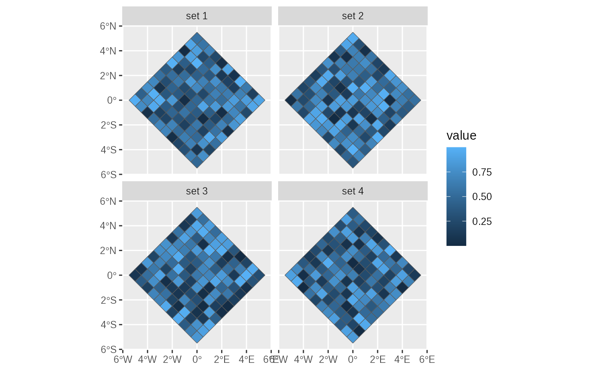
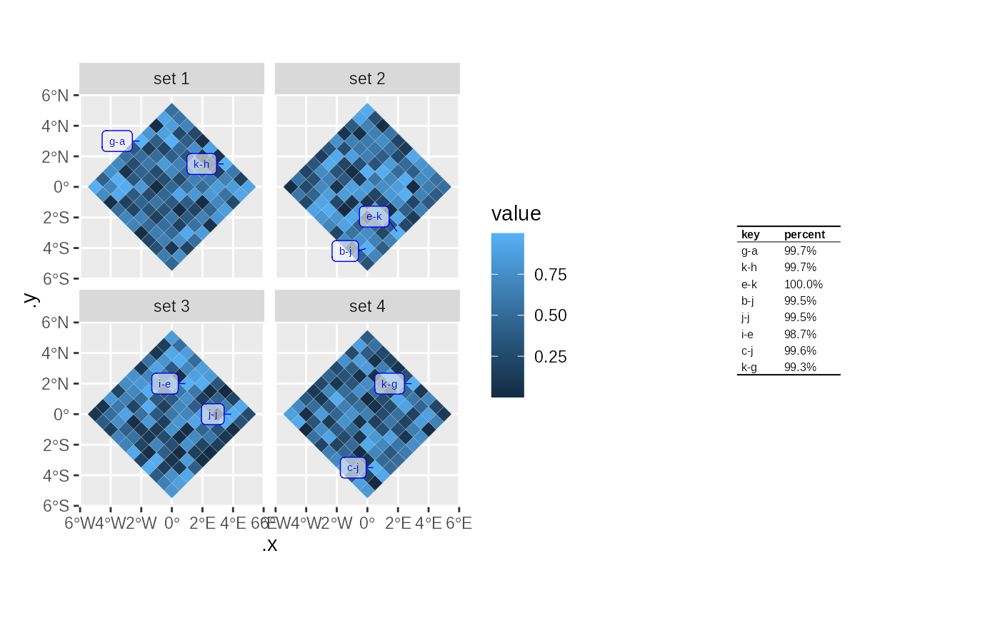

Create a map, usually as a chloropleth, with selected areas labelled.
Source:R/arear.R
plotLabelledMap.RdThis can be used to pick out specific highlighted regions based on a filter, label it on a map using a short code, and provide a tabular lookup of label to full name.
Arguments
- data
A sf object with some data in it. If using facets this should be grouped. (and if it is grouped faceting will be automatically added)
- mapping
the aesthetics as would be passed to `geom_sf`
- ...
additional formatting parameters as would be passed to `geom_sf` (defaults to a thin grey line for the edge of the maps.)
- labelMapping
the aesthetics of the label layer. This could include any aesthetics that apply to `ggrepel::geom_label_repel` other than `x`,`y`.. It must include a label aesthetic (which will go on the map) and a name aesthetic (which will go in the lookup table)
- labelStyle
any additional formatting parameters that would be passed to `ggrepel::geom_label_repel`. Defaults to a blue label on a light transparent background which works for dark maps. A `list(segment.colour = "cyan", colour="cyan", fill=="#000000A0")` should give a cyan label on a dark transparent background which might work for lighter maps.
- labelSort
(optional) how should we sort the labels . This defaults to the descending order of the same variable that determines the fill of the main map. This should be a simple expression that you might use for `dplyr::arrange` and can include `desc` for descending.
- labels
how many labels do you want, per facet. The default 6 is good for a small number of facets. This will be overridden if `labelFilter` is specified
- labelSize
in points.
- tableSize
the labels and the other data from all facets will be assembled into a table as a ggplot/patchwork object. This defines the font size (in points) of this table. No other config is allowed.
- labelInset
if a map has an zoomed in inset as produced by `popoutArea()`, for areas which are in both the main map and the inset you may wish to label only the zoomed area in the "inset", only the unzoomed area in the "main" map or "both" (the default).
Value
a list containing 4 items. Plot and legend may be added together to form a ggplot patchwork. e.g. `p = plotLabelledMap(...)` then `p$plot+ggplot2::scale_fill_viridis_c()+ggplot2::facet_wrap(dplyr::vars(...))+p$legend+patchwork::plot_annotation(taglevels="A")` to actually show the map.
- plot
a ggplot object showing a chloropleth (usually) which is defined by the main mapping aesthetics, with an overlaid labelling layer defined by the `labelMapping` label aesthetic. This does not include fill or colour scales so you will probably want `plot+ggplot2::scale_fill_viridis_c()` or something similar to define the fill
. If the input data is grouped this
plot will be facetted by group.
- legend
a ggplot patchwork containing the lookup table from labels to other data (as determined by the `labelMapping` aesthetics)
- labelDf
the filtered dataframe of the labels appearing in the labelling layer. The .x and .y columns are added which show where the label is placed on the main map. the .label and .name show the labels and names respectively
- labeller
A function that returns a layer of the labels, formatted in same way as the main map. the labeller function takes optional xVar and yVar parameter which are columns in the sf object. These define the x and y aesthetics of the labeller and default to the same position as the main map. The labeller function can be used to add a labels layer to a different map, or to a different graph. This might be useful if you want to combine cartograms with points of interest and have them consistently labelled.
Examples
# create some test data:
tmp = dplyr::bind_rows(lapply(1:4,
function(i) testdata$diamond11x11 %>%
dplyr::mutate(set = sprintf("set %d",i), value = runif(x)
))) %>% dplyr::group_by(set) %>%
dplyr::mutate(name = sprintf("%s-%s", letters[x+6], letters[y+6]))
ggplot2::ggplot(tmp)+ggplot2::geom_sf(ggplot2::aes(fill = value))+
ggplot2::facet_wrap(~set)

p = plotLabelledMap(
data = tmp,
mapping = ggplot2::aes(fill = value),
labelMapping = ggplot2::aes(label=name,percent=sprintf("%1.1f%%",value*100)),
labels = 2
)
#> Warning: st_centroid assumes attributes are constant over geometries
#> Warning: st_centroid does not give correct centroids for longitude/latitude data
p$plot+p$legend
